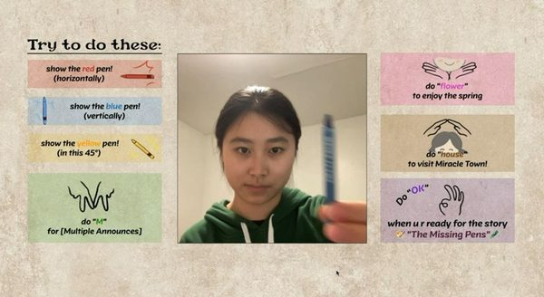
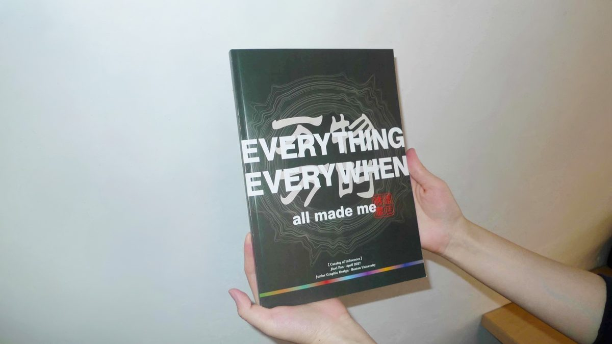
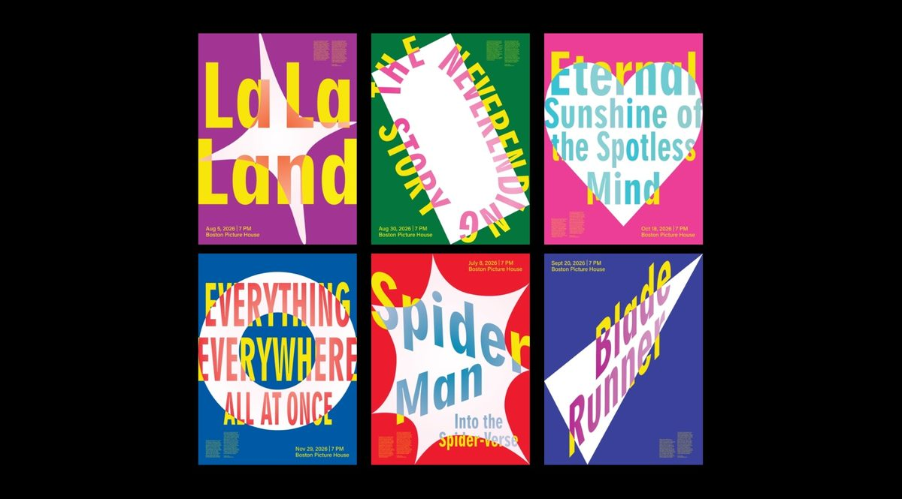

Jiaxi (Peggy) Pan

How do creators and audiences decide what counts as authentic when AI is part of the work?
I study this across Chinese and Western platforms, reading Xiaohongshu and Instagram in their own languages. In my first independent research project, forty popular AI illustration posts drew mostly praise on Instagram, while on Xiaohongshu people also discussed the work, asked how it was made, and sometimes made their own. I trained in graphic design and advertising at Boston University, and both shape how I read what creators make and how audiences respond.
Research Assistant at Lo/Be Lab. Senior at Boston University (BFA in Graphic Design and BS in Advertising), applying to graduate programs in communication, media and design for Fall 2027.
Research
 Audience Engagement with AI Illustration on Xiaohongshu and InstagramWhat people do in the comments under AI illustration, compared across a Chinese and a Western platform.Negotiating Selfhood with AI: Chinese International Students' Experiences of Cultural Values, Language, and Self-ReflectionHow Chinese international students use conversational AI to reflect on themselves during the move into U.S. higher education, and how their cultural background shapes what that reflection gives them.Creator AI-Use Disclosure on Xiaohongshu and InstagramHow designers on Xiaohongshu and Instagram disclose or frame their use of AI, signal authenticity, and how audiences respond.College Students’ Perceptions of AI in Super Bowl AdvertisementsA five-person mixed-methods class study of how college students perceive AI in Super Bowl advertising, combining semi-structured interviews with a survey.
Audience Engagement with AI Illustration on Xiaohongshu and InstagramWhat people do in the comments under AI illustration, compared across a Chinese and a Western platform.Negotiating Selfhood with AI: Chinese International Students' Experiences of Cultural Values, Language, and Self-ReflectionHow Chinese international students use conversational AI to reflect on themselves during the move into U.S. higher education, and how their cultural background shapes what that reflection gives them.Creator AI-Use Disclosure on Xiaohongshu and InstagramHow designers on Xiaohongshu and Instagram disclose or frame their use of AI, signal authenticity, and how audiences respond.College Students’ Perceptions of AI in Super Bowl AdvertisementsA five-person mixed-methods class study of how college students perceive AI in Super Bowl advertising, combining semi-structured interviews with a survey.Design
 The Bourne Protocol50 poster iterations inspired by The Bourne Identity, expanded into an interactive decryption game in a Figma prototype.
The Bourne Protocol50 poster iterations inspired by The Bourne Identity, expanded into an interactive decryption game in a Figma prototype. Tutu’s View of DataAn interactive picture book, map and colored pencil kit that introduces children to data.
Tutu’s View of DataAn interactive picture book, map and colored pencil kit that introduces children to data.
The Missing PensAn interactive story website and a Teachable Machine announcement, made to promote an event.
EVERYTHING, EVERYWHEN, all made meA book in nine chapters about everything that has influenced me, built on the Chinese idea of Jiu Jiu Gui Yi: all things return to their origin.More 8 projects
 Museum Cultural Product DesignA product line drawn from artifacts in the Luoyang Museum: a silk scarf, acrylic clips and their posters, and a tote bag inspired by the pattern of Eastern Han dynasty dancing figurines.
Museum Cultural Product DesignA product line drawn from artifacts in the Luoyang Museum: a silk scarf, acrylic clips and their posters, and a tote bag inspired by the pattern of Eastern Han dynasty dancing figurines. Oxymorons in English and ChineseType studies of oxymorons in English and Chinese.
Oxymorons in English and ChineseType studies of oxymorons in English and Chinese. Design BepopA Risograph animation in which a battle moves across different visual styles and universes, and turns out to be a designer’s endless struggle with Adobe Illustrator.
Design BepopA Risograph animation in which a battle moves across different visual styles and universes, and turns out to be a designer’s endless struggle with Adobe Illustrator. The Story from 1 to 1A story of returning to simplicity and origin, told through pop-up, flip, and accordion book designs.
The Story from 1 to 1A story of returning to simplicity and origin, told through pop-up, flip, and accordion book designs.
Cinema ReimaginedMovie poster redesigns built almost entirely from type.Varia Academy Visual IdentityA visual identity for Varia Academy, a fictional Slovenian art school, mixing traditional and contemporary forms and built on deliberate inconsistency. Personal Pattern & Future PatternTwo patterns: Personal Pattern, about who I am, and Future Pattern, about what I hope for.
Personal Pattern & Future PatternTwo patterns: Personal Pattern, about who I am, and Future Pattern, about what I hope for. Life VoyageA 3D exploration game about the course of a life, built around balance and cycles.
Life VoyageA 3D exploration game about the course of a life, built around balance and cycles.Reading
- Social media and ordinary life: Affect, ethics, and aspiration in contemporary China
- Xiaohongshu (RedNote) as digital infrastructure of global China: Spatializing Chineseness elsewhere
- Wanghong as social media entertainment in China
- “Better ask for forgiveness than permission”: Practices and policies of AI disclosure in freelance work
- Introduction to artificial intelligence in the creator economy: Creativities, adaptation, agency, and trust
- What is the future of AI-generated art? An AI-assisted netnography of resistance on Chinese social media platforms
- AI vs. human-generated content and accounts on Instagram: User preferences, evaluations, and ethical considerations
- Creator governance in social media entertainment
- Policing “fake” femininity: Authenticity, accountability, and influencer antifandom
- Global perspectives on platforms and cultural production
- Participatory branding on social media: The affordances of live streaming for creative labor
- Social media entertainment: The new intersection of Hollywood and Silicon Valley
- Revenue generation through influencer marketing
- Instafame: Luxury selfies in the attention economy
- The qualified self: Social media and the accounting of everyday life